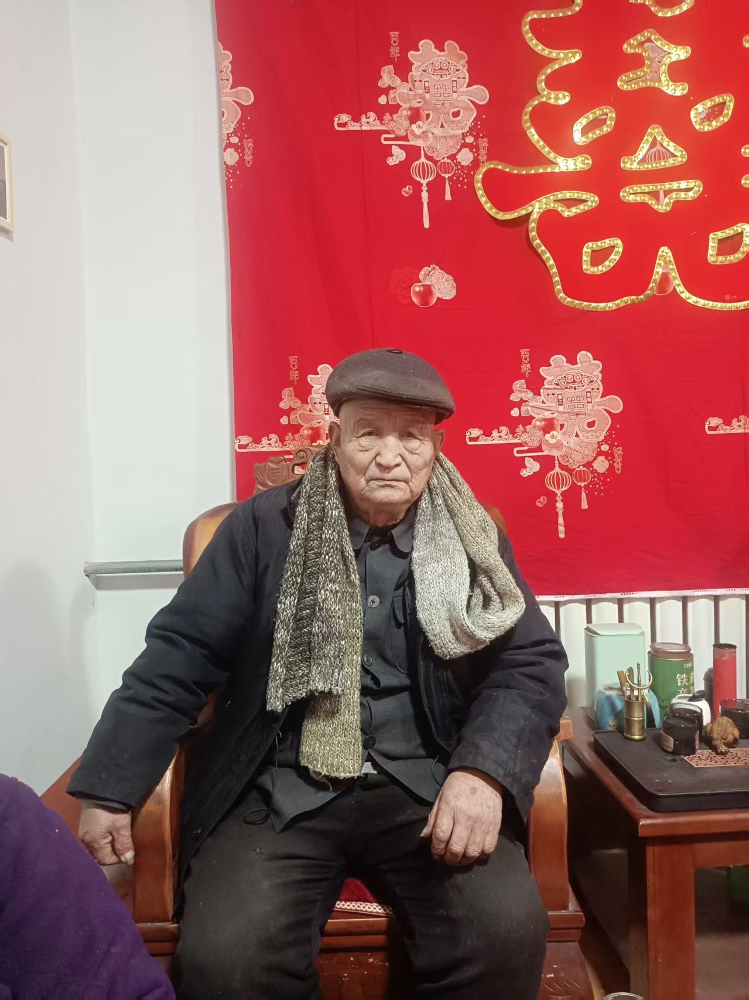

20260719五行之后，全是心法修炼；修炼方法，全在大乘经典里
修炼修行符咒术法 原始对话记录回到家，父亲说膝盖疼，就带他去西边不远私立医院拍了个片，医生说，跟三十岁年轻人骨骼一样，一点疏松也没有，半月板完好
再问原因，原来是两人又去地里锄草，累的
两老人身体指标，有可能跟我念力有关
医生都说不可思议
少见九十岁了，骨骼还这么好

这是前年年底
这是现在
记得前年底，走一趟就喘的厉害，
现在啥事没有
主要是耳不聋，眼不花
佛经里的观想，就是练意念力
意念力能改变一切
[强][强][强]
佛国世界，就是高维
去佛国世界修炼，一天抵得上人间修炼三年
元神意识去
不移一步到西天，就是这意思
善财童子，说的就是意识穿越各佛国，学到了好多
五行之后，全是心法修炼
修炼方法，全在大乘经典里
自己不开悟，真的没人教得了
开悟的愣严
楞严咒破一切邪法
阻碍修炼的是因果业障
因果业障破了，就身体内外，心性，通达无碍
通达无碍，放大光明，无所不知，也就开悟了
大心大心大相
菩提树，高五百由旬，大约五千公里
心相高大
金银琉璃珍珠玛瑙七宝组成，就是心相光明
既观想高大，又观想枝叶，也就是细小
眼光明，心光明，身体处在这个光明境界里
时时刻刻
如果感觉身体有杂质不通透，可以去七宝池八功德水里，沐浴
非凡水，内外涤滤
自身就是透明的海绵，挤一挤，一切杂质都冲洗的非常干净
每天有时间就这样观想一次
久思成真
试一下，身体是不是轻盈轻快轻松
身心愉悦
五行之后全是心法：观想、放光与"意念力"记录
一、本页是什么
本页原记录是一段心法修习随记，由家里探亲的一段小事起头，很快转到修习心得。核心结论一句话："五行之后，全是心法修炼；修炼方法，全在大乘经典里。" 记录里既有观念（观想=练意念力），也有具体观法（七宝池沐浴），属读经修习笔记一类。
二、"五行之后是心法"这句话
记录先讲了一段家常：父亲喊膝盖疼，去私立医院拍片，医生说骨骼状态好；记录者据此感慨"两老人身体指标，有可能跟我念力有关"。
要说明的是：这是一则私人叙述。 长辈"骨骼好""耳不聋眼不花"，与该记录者的"念力"之间不能画等号；老人身体的变化有众多因素，任何身体状况请以医生诊断为准。
顺着这段话，记录抛出主旨：基础的"五行"练完之后，往上走就是"心法"，而心法的教材"全在大乘经典里"。记录还说"自己不开悟，真的没人教得了"——强调自悟。
三、观想即"练意念力"
记录把佛经里的观想直接翻译成一句大白话：
"佛经里的观想，就是练意念力。意念力能改变一切。"
并顺带解释"佛国世界，就是高维""去佛国世界修炼，一天抵得上人间三年""元神意识去"。这里"高维""一天抵三年"都是借现代词汇做的比喻式描述，不是可量化的事实，本站只作转述。与之相近的还有全站的《意念力，专注力，就是脑电磁波能量》一篇。
四、七宝池沐浴的"清理"观想
记录给出一段可操作的观法，是本文里最"具体"的部分：
| 步骤 | 记录中的说法 |
|---|---|
| 起观 | 感觉身体有杂质不通透时，观想去七宝池、八功德水 |
| 沐浴 | "非（凡）水，内外涤滤" |
| 比喻 | 自身是"透明的海绵"，挤一挤，杂质被冲干净 |
| 频次 | "每天有时间就这样观想一次" |
| 收束 | "久思成真"，体会身体是否轻快 |
记录还接了"大心大相"的话头（菩提树高五百由旬、七宝合成、眼光明心光明），可与本集群《心法·大心大相》对照。
五、常见问题
问："意念力能改变一切"是真的吗？ 这是记录的表述用语，属主观主张。本站不承诺任何功效，请理性看待。
问：长辈骨骼好是"念力"的功劳吗？ 不能这样归因。 那是私人叙述。身体检查结果请以医生诊断为准，任何功法都不能替代诊疗。
问：这类观想要做多久见效？ 记录说"久思成真"，本身未给期限、未给效果。本站只作修习记录介绍。
六、提醒
- 本页为探亲随记与修习心得的整理，含主观体验；
- 涉及健康的内容仅作转述，请及时就医、遵医嘱；
- 相关观想说法只作记录介绍，不承诺功效；
- 全站内容按传统文化研究参考，理性辨析。